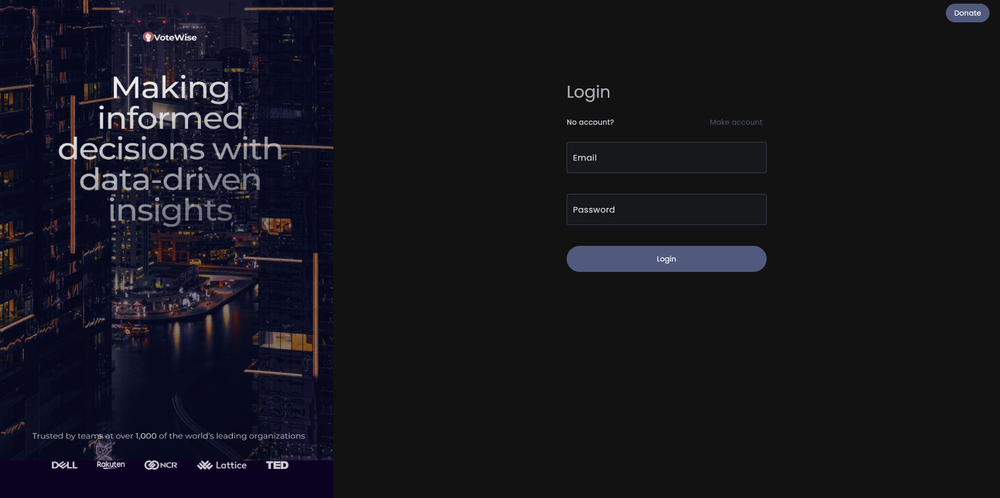
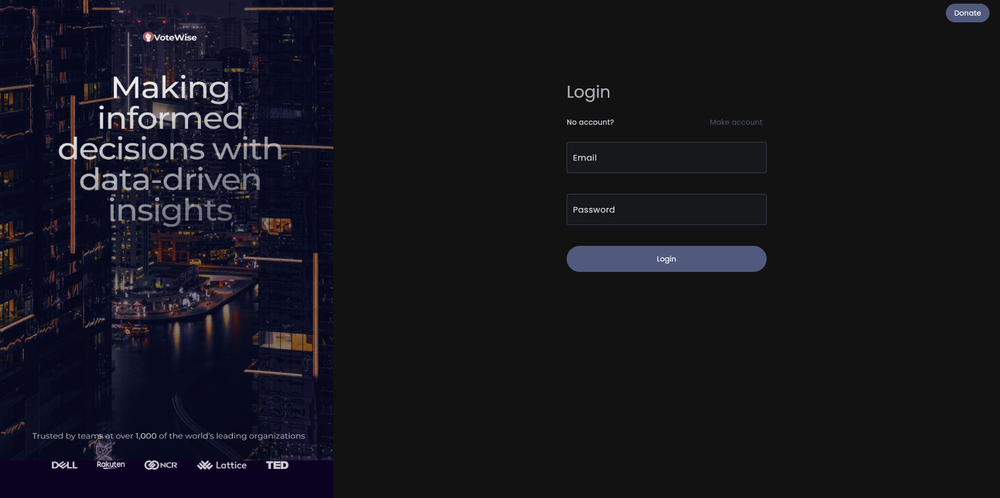

Currently, I am pursuing my MS in CS with a specialization in Multimedia from UAlberta.
Prior to this, I was a Full Stack developer at Accenture. To know more about my brief story download my CV.
 

For a project, we have developed a web application that is designed to help political candidates better manage their campaigns.
Our application is designed to analyze public sentiment on social media platforms like Twitter and Reddit. By studying public sentiments about themselves, opposition candidates, or any topic related to their campaign,
candidates can get a better understanding of how their message is being received by the public.
The application works by analyzing the content of Twitter and Reddit threads related to a particular candidate, issue or topic.
Using machine learning algorithms and natural language processing techniques, the application is able to classify the sentiment expressed in each tweet or post as positive, negative, or neutral.
Based on the sentiment analysis, the application generates a score sheet that gives an overview of the public sentiment towards the candidate, their opposition or any topic.
The score sheet helps the candidate to identify areas where they may need to focus their messaging to improve their public image or highlight their strengths.

For this project, I collected real-time data from the official website of Calgary airport and used this data to create visualizations that can be used by a variety of stakeholders, including travellers, airport staff, and nearby restaurants.
To create the visualizations, I used a number of different technologies, including ReactJS, RechartsJS, and various APIs. These technologies allowed me to create interactive and dynamic visualizations that are easy to use and understand.
For example, travellers can use the visualizations to get real-time information about flight delays, gate changes, and other important information. This information can help them plan their travel more efficiently and reduce the stress associated with air travel.
Overall, this project has been a valuable tool for a variety of stakeholders at Calgary airport, providing them with real-time information and insights that can help them to improve the efficiency and effectiveness of their operations.

The National Hockey League (NHL) is a beloved professional sports league that garners a significant following from passionate fans. These fans crave detailed information about their favorite teams, players, and statistics. As such, it is crucial for the league to have a website that caters to the needs of its hardcore fans.
Our proposed NHL website is designed to meet the demands of fans who seek comprehensive statistics and analytics. The website provides detailed information on every team and player in the league, including scoring, assists, time on ice, plus/minus, and other key performance indicators.
In addition to statistics, the website includes graphics, animations, and visualizations that enhance the user experience. For instance, fans can view heat maps that display the location and frequency of a player's shots on goal. These visuals provide fans with a deeper understanding of a player's performance and help them appreciate the intricacies of the game.
Overall, our proposed NHL website offers a comprehensive platform that satisfies the needs of hardcore fans. The combination of detailed statistics, advanced analytics, graphics, animations, visualizations creates a rich and engaging experience that can keep fans coming back for more.

The quality of air in major cities in India has been a growing concern in recent years due to various factors such as industrialization, urbanization, and traffic congestion. To address this issue, we have undertaken a data analysis project on the air quality index (AQI) data of major Indian cities from the years 2015-2020.
Our project aims to analyze the AQI data from multiple cities and extract insights on trends, patterns, and potential correlations. The data collected includes AQI readings from various monitoring stations in each city.
Through our analysis, we aim to identify the major sources of air pollution in these cities, determine the impact of seasonal changes on AQI, and evaluate the effectiveness of existing pollution control measures.
Additionally, we plan to expand our project by augmenting the existing dataset with real-time data and leveraging machine learning algorithms to predict AQI levels in the future. This predictive analysis will help us identify potential spikes in AQI and take proactive measures to mitigate their impact.
Overall, our AQI data analysis project aims to provide insights that can inform policymakers, city planners, and the general public on the state of air quality in major Indian cities.